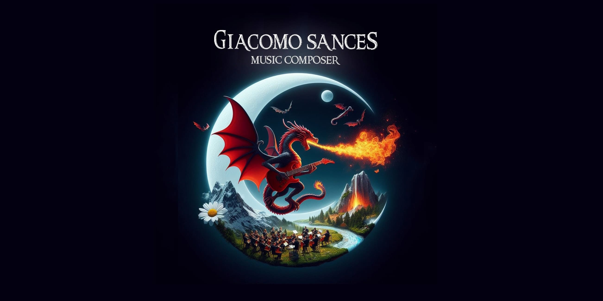
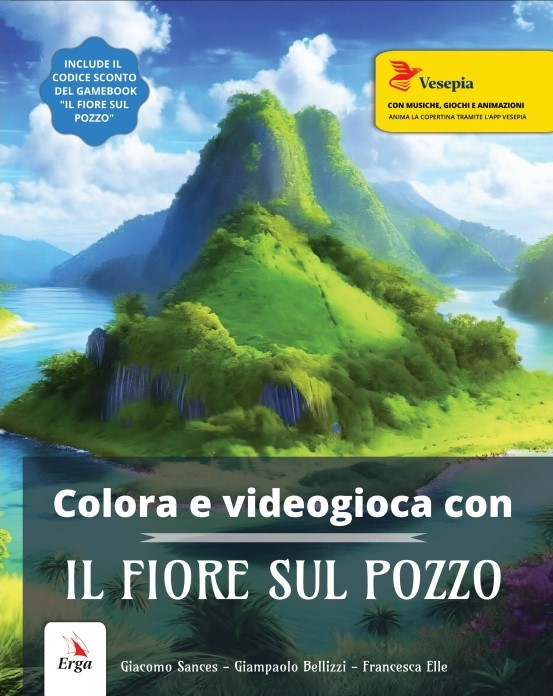
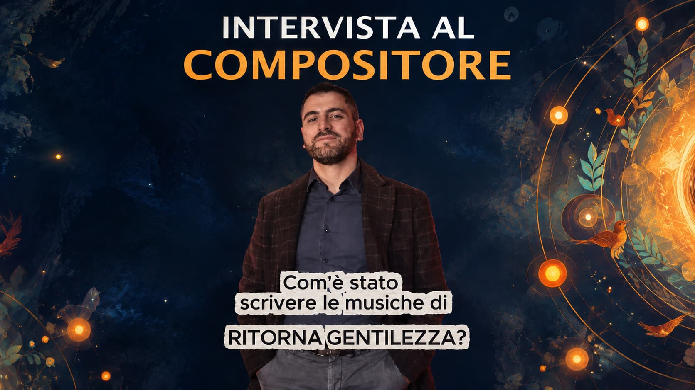

Il fiore sul pozzo
Tematiche
Incontri di lettura, musica e teatro nelle scuole
Sono Giacomo Sances, docente di musica e autore. Scrivo libri con canzoni, colonne sonore e giochi interattivi per motivare i ragazzi alla lettura.

';" alt="Logo YouTube">Iscriviti al mio canale YouTube per ascoltare in anteprima le colonne sonore, i brani e le canzoni didattiche pensate per le scuole!
Scopri Ritorna gentilezza, lo spettacolo teatrale di Lorenzo Palumbo, prodotto da Visione Scuola, con le mie musiche originali.
Tematiche

Storia di un bullo che scoprì la musica
Tematiche

9 strade e 9 canzoni per la lotta contro il bullismo fisico e digitale
Tematiche

Tematiche

Tematiche

Tematiche

Edizione con filastrocche in endecasillabi e disegni da colorare
Tematiche

Tematiche
Compila il modulo contatti per richiedere informazioni, materiali didattici legati ai progetti di lettura, copioni ricavati dalle mie storie, canzoni e spartiti, o per pianificare un incontro con l’autore nella tua scuola.
Lo spettacolo teatrale che risponde al bullismo con la forza dell'amore e della musica
La storia di Luca e del suo mondo virtuale affronta con linguaggio autentico tematiche cruciali come il bullismo, la solitudine giovanile, la dipendenza da videogiochi e il coraggio di deporre le corazze per scegliere l'empatia.
Le mie colonne sonore originali culminano con il brano Ritorna gentilezza, cantato dagli attori assieme a tutti gli spettatori.
Ascolta il brano ufficiale Ritorna gentilezza, cantato con Chiara Serena Brunetta e Serenella Colazzo, cuore musicale ed emozionale del progetto.

Guarda l'intervista video in cui si racconta la genesi della colonna sonora, la composizione del valzer e l'ispirazione dietro ai temi musicali.
Autore spettacolo: Lorenzo Palumbo
Colonne sonore: Giacomo Sances
Testo e musica del brano Ritorna gentilezza: Giacomo Sances
Produzione: Visione Scuola
Durata: 75 minuti
Compila il modulo per richiedere informazioni, materiali didattici legati ai progetti di lettura, copioni ricavati dalle mie storie, canzoni e spartiti, o per pianificare un incontro con l’autore nella tua scuola.
Clicca sull'immagine per ingrandire
Direttamente nel libro:
Su richiesta, ad attivazione del progetto di lettura:
I seguenti materiali bonus sono riservati agli utenti che si iscrivono su questo sito:
Rassegna stampa e articoli di approfondimento in arrivo per questo titolo.
Guarda i progetti e le restituzioni realizzate dagli studenti in classe:
Video della scuola Giovanni XXIII di Santa Maria a Vico (CE)La gallery fotografica con i lavori delle scuole sarà disponibile quanto prima.
Clicca sull'immagine per ingrandire
I seguenti materiali bonus sono riservati agli utenti che si iscrivono su questo sito:
Guida didattica
Riadattamento teatrale
Galleria Fotografica del Romanzo


 Clicca sull'immagine per ingrandire
Clicca sull'immagine per ingrandire
Rassegna stampa e articoli di approfondimento in arrivo per questo titolo.
Clicca sull'immagine per ingrandire
Rassegna stampa e articoli di approfondimento in arrivo per questo titolo.
Clicca sull'immagine per ingrandire
Rassegna stampa e articoli di approfondimento in arrivo per questo titolo.
Clicca sull'immagine per ingrandire
Tra i vicoli contorti di una Napoli notturna, sfavillante di luci natalizie, serpeggia un arcano mistero. Un oscuro barbone è apparso sulla luccicante via San Gregorio Armeno. Cosa vuole? Come vive? E perché mai si trascina dietro quel presepe senza Bambinello? Per far luce sulla questione quattro ragazzini dovranno brancolare nel buio. Saranno offuscati da invidie e gelosie della gente, da interessi propri e tentazioni egoistiche. Solo chi saprà attraversare indenne questa cupa selva di sentimenti negativi scoprirà il vero significato dell’altruismo, dell’amicizia disinteressata e dell’amore profondo. Basta una piccola luce per dissolvere ogni tenebra. A te non resta che vivere la storia leggendo il libro e ascoltando i brani cantati dagli stessi personaggi, presenti nella sezione “Materiali di libero accesso” di questa pagina. Ma bada bene: non sarai solo un lettore, non sarai solo un ascoltatore. Alla fine dell’avventura anche tu avrai un solo desiderio da esprimere! Potrai farlo con il pulsante: “Ho letto il libro, voglio esprimere il mio desiderio” che sostituisce l’ultimo QR code del romanzo. Sarai l’ago della bilancia tra il bene e il male, tra le tenebre e la luce!
Oggigiorno il senso profondo del Natale è affievolito da varie contingenze sociali. Nella frenetica vita quotidiana, sempre più individualistica ed egoistica, sempre più legata alla realtà virtuale e alla spasmodica rincorsa alla realizzazione personale, sembra svanire il concetto di comunità, di condivisione. Si perde anche il sapore dell’attesa di un evento festivo d’eccezione, sia dal punto di vista spirituale che da quello tradizionale.
I messaggi di base di questo romanzo sono: la riscoperta del vero senso di amicizia; l’integrazione delle diversità; la condanna del bullismo; la critica all’egoismo, all’invidia e al rancore; la critica alla demagogia sociale; il recupero delle tradizioni; l’altruismo; la condivisione delle risorse; lo sviluppo di un bene comune; la riflessione sull’uomo e sulla sua spiritualità.
Canzoni del romanzo (saranno riregistrate e masterizzate a breve):
I seguenti materiali bonus sono riservati agli utenti che si iscrivono su questo sito:
in costruzione
Galleria Fotografica


«Sono Luna. Desideri impuri mi hanno invecchiata. Ma in te ho visto qualcosa. Per questo ti ho narrato la mia storia e ora è il tuo momento. Esprimi il tuo desiderio puro…»
«Basta un solo desiderio puro per accendere una luce nel buio e fermare il tempo che invecchia il cuore.» Ecco i desideri raccolti tra le pagine del romanzo.
Rassegna stampa e articoli di approfondimento in arrivo per questo titolo.
Clicca sull'immagine per ingrandire
Rassegna stampa e articoli di approfondimento in arrivo per questo titolo.